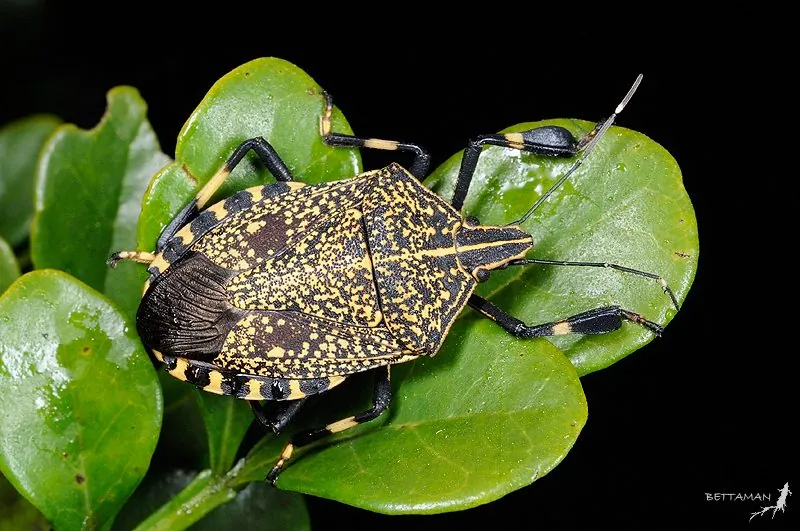

昆虫 · 动物界
麻皮蝽 Erthesina fullo

体背布满黑色刻点和黄色斑纹的大型蝽，受惊时从臭腺喷出刺鼻液体，吸食果实汁液，是果树林木害虫。
- 分类
- 门节肢动物门纲昆虫纲目半翅目科蝽科属麻皮蝽属
- 栖息环境
- 梨、苹果、柑橘等果树林木的枝叶和果实，也常进入庭院
- 地理分布
- 中国大部分地区，以及日本、朝鲜和东南亚
- 保护级别
- 暂无评估
物种志
麻皮蝽成虫体长 20–25 mm，体背灰黄至棕褐色，密布黑色刻点，从前胸背板到小盾片有一条明显的黄色纵线，体形宽阔而扁平，状如盾牌。若虫体色深褐，腹部背面有黑色斑纹，外形与成虫相似但无翅。
麻皮蝽分布于中国大部分地区以及日本、朝鲜和东南亚，是梨、苹果、柑橘、桃和梧桐等果树林木上的常见害虫。它一年发生 1 代，以成虫在墙缝、树皮和落叶下越冬，翌年春季出蛰活动。成虫和若虫刺吸果实和嫩梢汁液，果实表面出现凹陷的硬斑，果肉变硬、风味变差；受惊扰时，它从腹部臭腺喷出刺鼻的液体，因此又被称作“臭大姐”。防治可在若虫期喷药，并注意清除越冬场所。
形态与习性
- 食性刺吸梨、苹果、柑橘、桃等果实与嫩梢汁液
- 体长成虫 20–25 mm
- 外形体背密布黑色刻点，有一条黄色纵线
- 臭腺受惊时从腹部臭腺喷出刺鼻液体
- 生活史一年 1 代，以成虫在墙缝、树皮下越冬
- 危害果实出现凹陷硬斑，果肉变硬、风味变差
趣味知识
- 麻皮蝽受惊时喷出的臭液来自腹部臭腺，气味久久不散。
- 它吸食过的梨和苹果，果面会留下凹陷的硬斑，影响商品价值。
- 冬天它常躲进墙缝和窗棂，开春后又飞回果园活动。